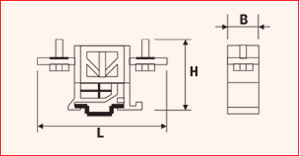
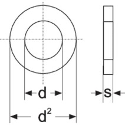

Operating instructions
Increase or reduce the size of the help section:
Press CTRL and the following simultaneously:
+ to zoom in
– to zoom out
Filter data in tables:
You will find the filter box at the top left of each table.

Type in the word to filter. By clicking on the blue clog wheels you can select if the word you are searching should feature at the start of the sentence or phrase or be contained in the search fields.
Sort data in tables:
Click on the column to arrange it in alphabetical order. If you wish to create other types of arrangement within the main sorting, hold down the Ctrl key and select the columns according to how you want the order to be set.
Example:
Table: Conductors
If you click on Code, the table will be arranged by conductor type. At that point, if you hold down the Ctrl key and click on the column Section mm2 each conductor type will be sorted by section.
Navigate through the table data:
Use the navigator in the top right-hand corner as follows:
 to go to the first row of the table
to go to the first row of the table
 to go to the previous row
to go to the previous row
 to go to the next row
to go to the next row
 to go to the last row
to go to the last row
 add or remove a selected row within the table.
add or remove a selected row within the table.
Select and delete several rows simultaneously:
To select multiple rows, position the cursor on the small rectangle to the left of the first row and hold down the CTRL key. Then select the following rows.
Once the rows have been selected, click on the icon 
The application will then ask for confirmation.
Duplicate rows:
Select rows as described above.
Then click on
 The rows will appear as in the figure below:
The rows will appear as in the figure below:

The newly duplicated rows will be highlighted in green to remind you that they need editing.
NB: Leaving the duplicated rows unedited will result in receiving an error warning when you press Update
Export data to Excel:
- Select the rows you wish to export and press

- Open Excel
- Position the cursor at the insertion point and paste
Import data from Excel:
- To import data selected for Excel select the data then press Copy
- Return to the application and click on
NB: The arrangement of the fields in the application must be identical to that of the spreadsheet you are copying from.
Confirm or cancel changes
To undo all changes press the Cancel button at the bottom left. To confirm all changes press the Update button at the bottom right.
Users
Introduction
This table allows you to input all the users who will use the applications.
The number of users does not necessarily have to coincide with the number of licenses.
The number of licenses only limits the number of simultaneous accesses to Clever Suite.
Example
A company that has purchased three licenses can install Clever Suite on more than three computers and the number of users can be greater than three, as long as no more than three designers are working simultaneously at any time.
Table fields
- UserName: it is an abbreviation of the user’s full name and may include a maximum of two characters in capital letters.
- Name: it is the first name of the user. The first letter is capitalised.
- Surname: it is the user's surname. The first letter is capitalised.
- Role: designs’ roles within the application can either be admin or user. In a company, there must only be one admin. All other operators must be user. Only the admin can access and modify the configuration options and he is the person responsible for the configuration of Clever Suite.
General settings
Introduction
The general characteristics of applications are outlined here.
Path for saving documents:
When using applications, pressing the export button saves all documents onto a predefined folder.
The path of the source folder must be selected in this field.
The application, starting from this base folder, defines the folder in which documents will be saved using this sequence:
Starting folder\Application type\Product code\Version
Example
| Field | Value |
|---|---|
| Application | Clever Inductor |
| Start folder | C:\Design |
| Product name | 000111 |
| Version | 2 |
| Document path | C:\Design\Clever Inductor\000111\2 |
It is would be advisable to archive documents on the network.
Description
- Logo: here you can insert your company logo, which must have a maximum resolution of 300 x 300 pixels. Pressing the button next to the logo opens a dialogue box that allows you to upload the desired design. If the design does not appear, it means that its resolution is too high and must be reduced.
- Currency: you can select the desired currency in the box below.
- Deletion Password Corporate Archive: as the deletion of designs from the Company Archive is a critical operation, a password must be entered to proceed with this operation. For security reasons, the following field requires confirmation of the said password.
Electrical parameters
Introduction
Here you can define some parameters that are involved in the electrical calculation or mechanical design, specific to each company.
Insulator overhang at the side of the coils (mm)
Enter the insulator overhang between the coil in the case of foil winding. This value will then be set automatically in the designs. It only applies to foil conductors as the set overhang for strip and wire conductors is always 0.
For all conductor types, it is possible to change the set value throughout the project.
Flat wire insulation thickness (mm)
The flat wire can be enamelled or Nomex insulated. Depending on the type of insulation, the thickness of the insulation changes. Enter the chosen thickness here.
Conductor waste factor
The winding weight can be increased by entering the multiplication factor here. In the technical specification and winding weight calculation, the exact theoretical weight will still be given.
Example
| Field | Value |
|---|---|
| Theoretical conductor weight | 10.00 kg |
| Waste factor | 1.03 |
| Weight in the bill of materials and cost | 10.30 kg |
Core waste factor
The same principle applies to core weight, as above.
Bulging of the windings
Introduction
The bulging of the winding is the multiplicative factor applied to the theoretical winding thickness to reach the actual winding thickness required. This parameter depends on the type of winding machines available in the company and how they work. Generally, in order to determine the bulging coefficient under various conditions, a series of sample windings must be defined. This includes measuring their real thickness and calculating the ratio between the real thickness and that which was theoretically calculated. Establishing the real winding thickness is particularly important as it leads to determining accuracy in the calculation of:
- Short-circuit voltage
- Load voltage
- Losses in the conductors and consequently overtemperature in the various winding sections
Within the table, you can define the bulging coefficient depending on the type, material and thickness of the conductor.
Using the "+" or "-" buttons in the navigator at the top right, you can insert rows to achieve greater granularity or delete rows if required fewer details.
Table Fields (Bulging of the windings)
-
Coil shape: the code that identifies the shape of the coil can be either rectangular R or cylindrical C. The current applications are not yet designed for cylindrical coils so the content of this field must always be R. Coil diversification will be included in future versions of the applications.
-
Material: select the material of the winding - AL or CU.
-
Code: select the type of winding by entering one of the following codes: F = wire P = flat wire B = foil
-
MAX. thickness: the maximum radial thickness of the conductor If the chosen coefficient of use is applicable for any thickness enter 0. If there is a thickness limitation, enter the thickness limit. In this latter case, enter an additional line for type and/or conductor material without set limitation, i.e. with Thickness MAX. = 0 and enter the correct coefficient.
-
Coefficient: multiplication factor to be applied to the theoretical thickness to obtain the actual thickness.
Construction parameters
Introduction
Under construction parameters, you will find all the tables that define the various design parameters. They can be used to design each type of element in an optimised way.
The PROFESSIONAL version of Clever Suite includes tables with standard values that may be quite different from the proportions you use in your company. Optimisation varies according to financial, geographical, and time-based conditions within which each company operates.
Therefore, it is paramount to compare the data supplied with your internal optimisation and carefully evaluate the values to be entered into the applications in order to obtain the best design at the lowest cost for all the various element types and relevant power.
For each type of element and each power, it is a matter of defining which geometric parameters lead to the greatest advantage in financial terms.
Clever applications will automatically adapt your established geometric parameters and allow you to design elements as optimised as possible straightaway.
For large elements, there are two tables: one for elements built with the non-oriented grain (NO) magnetic sheet and one for oriented grain (GO) magnetic sheet. This is because in these two cases, the proportioning is generally quite different.
Other tables, to define different parameters for special constructions, can be inserted on request.
All dimensions in the tables are expressed in mm. unless explicitly stated.
NO core
Table Fields ( NO core and GO core)
- Description: free descriptions of the type of element being designed are not included in the applications, so you can write descriptions as you see fit.
- Power VA: dimensioning power of the element in VA.
- Prim. wdg partwindings: the number of partwindings of the primary winding. In the case of inductors, this will be the total number of partwindings as there is only one winding.
- Prim. wdg channel: the thickness of the front channel between the partwindings of the first winding.
- Sec. wdg partwindings: No. of partwindings of the secondary winding.
- Sec. wdg channel: the thickness of the front channel between the partwindings of the secondary winding. This channel is also used between the primary and the secondary channel. If there were more than one secondary winding, the applications would copy the data of the first secondary winding.
- Winding H: net height of the windings (all windings are set to the same height).
- Core section cm2: section of the core (column) which is calculated as follows: sheet width x Core thickness x 0.97.
0.97 gives the actual cross-section, after deducting the spaces occupied by the insulation of the individual laminations. - Core Width: the width of the core sheet of the column (The core thickness is calculated automatically by the application, starting from the core section, taking into account the formula above).
- Front ch. core/coil: the front channel between the core and winding.
- Side ch. core/coil: the lateral channel between core and winding. The inclusion of frontal and lateral values is especially important for inductors. If there is no side channel, enter 0.
- Window width: the window width is the space between the columns.
- Window height: window height is the space between the two yokes.
GO core
Table Fields ( NO core and GO core)
- Description: free descriptions of the type of element being designed are not included in the applications, so you can write descriptions as you see fit.
- Power VA: dimensioning power of the element in VA.
- Prim. wdg partwindings: the number of partwindings of the primary winding. In the case of inductors, this will be the total number of partwindings as there is only one winding.
- Prim. wdg channel: the thickness of the front channel between the partwindings of the first winding.
- Sec. wdg partwindings: No. of partwindings of the secondary winding.
- Sec. wdg channel: the thickness of the front channel between the partwindings of the secondary winding. This channel is also used between the primary and the secondary channel. If there were more than one secondary winding, the applications would copy the data of the first secondary winding.
- Winding H: net height of the windings (all windings are set to the same height).
- Core section cm2: section of the core (column) which is calculated as follows: sheet width x Core thickness x 0.97.
0.97 gives the actual cross-section, after deducting the spaces occupied by the insulation of the individual laminations. - Core Width: the width of the core sheet of the column (The core thickness is calculated automatically by the application, starting from the core section, taking into account the formula above).
- Front ch. core/coil: the front channel between the core and winding.
- Side ch. core/coil: the lateral channel between core and winding. The inclusion of frontal and lateral values is especially important for inductors. If there is no side channel, enter 0.
- Window width: the window width is the space between the columns.
- Window height: window height is the space between the two yokes.
Generic elements
Table Fields ( Generic elements and UL elements)
- Norm: element type coding, which must be strictly respected. If a new element type is to be added, you must contact us for the code.
- Nr. Phases: no. of phases of the element.
- Power VA: dimensioning power of the element in VA.
- Flux density T: recommended induction (for NO core)
- Type magnetic steel EI: printed magnetic steel used (external dimension).
- Spec. core losses W/kg: grade of the magnetic steel used for this table (example: 1.7 , 1.3 or other).
- Core section cm2: core section (column) which is calculated as follows:
Core width x Core thickness x 0.965 0.965
gives the actual section, less the spaces occupied by the insulation of the individual laminations. - Core thickness: core thickness is calculated from the raw core section.
- Core width: width of the central core colunm.
- Core weight kg: total core weight.
- Window width: window width is the space between the columns or between the central column and the side column.
- Window height: window height is the space between the two yokes.
- Bobbin type: bobbin identification in accordance with supplier identification.
- Winding height: winding height available on the bobbin.
- Winding thick.: thickness available in the bobbin for the winding.
- Bobbin perimeter: internal perimeter of the bobbin, starting data for the calculation of the average length og the winding.
- Bobbin thick.: bobbin wall thickness.
UL elements
Table Fields ( Generic elements and UL elements)
- Norm: element type coding, which must be strictly respected. If a new element type is to be added, you must contact us for the code.
- Nr. Phases: no. of phases of the element.
- Power VA: dimensioning power of the element in VA.
- Flux density T: recommended induction (for NO core)
- Type magnetic steel EI: printed magnetic steel used (external dimension).
- Spec. core losses W/kg: grade of the magnetic steel used for this table (example: 1.7 , 1.3 or other).
- Core section cm2: core section (column) which is calculated as follows:
Core width x Core thickness x 0.965 0.965
gives the actual section, less the spaces occupied by the insulation of the individual laminations. - Core thickness: core thickness is calculated from the raw core section.
- Core width: width of the central core colunm.
- Core weight kg: total core weight.
- Window width: window width is the space between the columns or between the central column and the side column.
- Window height: window height is the space between the two yokes.
- Bobbin type: bobbin identification in accordance with supplier identification.
- Winding height: winding height available on the bobbin.
- Winding thick.: thickness available in the bobbin for the winding.
- Bobbin perimeter: internal perimeter of the bobbin, starting data for the calculation of the average length og the winding.
- Bobbin thick.: bobbin wall thickness.
Material tables
Introduction
The tables in this section are named 'technical tables' and contain all the materials that are used in the construction of the designed elements. There is a technical table for each group of materials. As illustrated in the forthcoming, the electrical and/or dimensional data required for the component being designed must be entered in these tables. If there are different sub-families within a table, they must be identified by a code. When choosing the code, follow the instructions in the help section of the specific table. Finally, you must enter the article code that you use in your management system.
Bear in mind that the list of materials in your warehouse is imported onto Clever Suite and can be found under "Material cost". The article code from the technical tables will allow applications to find the component on the imported list under "Material cost", thus retrieving your official description and its cost. These will be used at the design stage to compile the bill of materials and to calculate the total cost of materials.
In the initial installation, the tables are pre-filled with materials that we consider standard. This will shorten your data entry work and provide an example of how to enter the data. However, you can subsequently edit, delete, and add rows as you require.
It is important to carry out the configuration phase thoroughly as it will determine the quality of your future work.
Threaded rods
Introduction
Threaded rods are used in Clever Transfo and Clever Inductor applications for horizontal and vertical clamping of elements. The material is, generally, galvanized steel.

Table fields (Threaded rods)
- Length: it is the length of the semi-finished product. You can enter 0 as this value is currently not available.
- Weight kg/m: this value is generally taken from the supplier's specifications and is mandatory .
- Code: this code is useful for possible sub-families. Currently, the code AS0 must be used for all threaded rods (the last character is a zero).
- Material: material abbreviation. By opening the drop-down menu of the Material field, you see a list of all available materials and can choose the correct abbreviation.
- Dimension M: enter here the M value corresponding to dimension 'd' in the drawing above.
- Article: to select the material, use the article code of your management system. This value will allow the applications to retrieve the description and unit cost into the table Material Unit Cost by importing the list of materials available in your warehouse.
Insulating bushes
Introduction
Insulating bushes are used in Clever Small-T and Clever Small-I applications for insulating screws in horizontal clamping. They can be replaced by insulating tubes if required. Several fields included in the table are currently not operational. Hence, must have a value of 0.

Table fields (insulating sleeves)
- External diameter: dimension B of the drawing above. This value is not used enter 0 (dimension B of the drawing).
- Collar diameter: dimension C of the drawing above. This value is not used, enter 0.
- Thickness: dimension D of the drawing above. This value is not used enter 0.
- Length: dimension E of the drawing. This value is not used, enter 0.
- Dimension M: dimension A of the drawing above. Enter the value M here.
- Material: material abbreviation. By opening the drop-down menu of the Material field, you see a list of all available materials and can choose the correct abbreviation.
- Code: this code is useful for possible sub-families. At present, the BUI code must be used for all types of bushes.
- Article: to select the material, use the article code of your management system. This value will allow the applications to retrieve the description and unit cost into the table Material Unit Cost by importing the list of materials available in your warehouse.
Lugs
Introduction
Non-insulated cable lugs are used in Clever Transfo and Clever Inductor applications as output terminals when current or other parameters do not permit the use of terminal blocks. They can be fixed to insulators or a plate.

Table fields (Lugs)
- Material: here we do not refer to the material abbreviation list, but enter AL in the case of aluminium or CU in the case of copper.
- The section in mm2: usable section. It refers to the maximum section of the conductor to be inserted.
- Type: abbreviation by which the lug is identified (can be the supplier's abbreviation).
- Rating current A: maximum supported current.
- Hole diameter: diameter of the hole into which the conductor will be inserted ( Ø i) as per drawing.
- Article: to select the material, use the article code of your management system. This value will allow the applications to retrieve the description and unit cost into the table Material Unit Cost by importing the list of materials available in your warehouse.
Multi wire cables
Introduction
Cables are either class B or F or H insulated multi-wire conductors that can be used as the output terminals of a shield (in which case they will be yellow/green). They may also used in small wire coils, welded to the conductors to connect the terminal blocks. In the latter case, the external insulation will be made of different materials depending on the temperature class and may have different colours to comply with the colour codes defined by the company.
Table fields (multi wire cables)
- Rating current A: it is the maximum current allowed.
- External diameter: external diameter - usually available from suppliers' tables. This is not mandatory, it can also be omitted.
- Insulating voltage KV: maximum insulation voltage admitted for the cable. The applications compare this value with the insulation voltage of the element.
- Code: this coding is used to distinguish the type of insulation. LSIL = Silicone is the standard. For other materials, additional codes must be defined but must be recognised by the design rule that selects the cable and enters it in the bill of materials. Hence, we require the definition of other codes in the customisation phase of the application.
- Material: material abbreviation. By opening the drop-down menu of the Material field you see the list of all available materials and can choose the correct abbreviation.
- Section mm2: conductor section. This information is mandatory.
- Colour: colour of the insulating sheath.
- Article: to select the material, use the article code of your management system. This value will allow the applications to retrieve the description and unit cost into the table Material Unit Cost by importing the list of materials available in your warehouse.
Conductors
Introduction
This table lists all conductor types (wire, flat conductor, tape) in the two materials AL and CU.
Table fields (Conductors)
-
Axial dim: for wire, enter the bare diameter, for flat wire or foil enter the axial dimension.
-
Radial dim: for wire, enter the insulated diameter, for flat wire or foil enter the radial dimension.
-
Section mm2: enter the net section, ideally from the supplier's table. If this is not possible, for flat wire, the net section is calculated as follows:
- Case radial thickness <= 2.24
Section = (axial dimension x radial dimension) - 0.363 - Case radial thickness case > 2.24
Section = (Axial dimension x Radial dimension) - 0.55
However, for wire and foil, the precise area is calculated.
- Case radial thickness <= 2.24
-
Kg/meter: we recommend taking this parameter from the supplier's tables. Otherwise, it should be calculated from the section and specific weight (CU = 8.90 kg/dm3 AL = 2.70 kg/dm3).
-
R/meter Ohm: we recommend obtaining this parameter from the supplier's tables. Otherwise, it should be calculated from the section and specific resistance (CU = 0,00175 Ω/m AL = 0 ,0028 Ω/m).
-
Code: this code defines both type and material of the conductor.
Enter:
| Code | Material |
|---|---|
| B3 | AL foil |
| B4 | CU foil |
| P3 | AL flat wire |
| P4 | CU flat wire |
| F3 | AL wire |
| F4 | CU wire |
- Article: To select the material, use the article code of your management system. This value will allow the applications to retrieve the description and unit cost into the table Material Unit Cost by importing the list of materials available in your warehouse.
Nuts
Introduction
Nuts are used for the horizontal and vertical tightening of elements, for the ground screw and for fixing output terminals (cable lugs or bars) on plates or insulators.
Table fields (Nuts)
-
Code: Acronym by which the shape of the nut is identified. The abbreviations still in use are:
DE = Hexagonal nut (standard)
DA = high hexagonal nut
other shapes could be defined when customizing applications. -
Dimension M: M of the internally threaded hole (dimension D in the drawing above).
-
Dim. max: corresponds to dimension E in the drawing above and may be omitted.
-
Key width: corresponds to dimension SW in the drawing above and may be omitted.
-
Thickness: corresponds to the H dimension of the drawing above and may be omitted.
-
Material: material abbreviation. By opening the drop-down menu of the Material field, you see a list of all available materials and can choose the correct abbreviation.
-
Article: to select the material, use the article code of your management system. This value will allow the applications to retrieve the description and unit cost into the table Material Unit Cost by importing the list of materials available in your warehouse.
Steel Ducts
Introduction
Steel ducts are used for the formation of front or side cooling channels in transformer or inductor windings. They are not suitable for channels along the entire perimeter of the coil. The shape is generally C-shaped as shown in the figure above and there are C-shaped variants with rounded edges. They can be made of Ac Zn for transformer core/coil channels. In all other cases, the recommended material is AC 18/10 stainless steel.

Table fields (steel ducts)
- Material: material abbreviation. By opening the drop-down menu of the Material field, you see a list of all available materials and can choose the correct abbreviation.
- Number: the number of steel ducts used for a channel. For standardisation reasons, it is possible to place 2 or even 3 steel ducts side by side in order to achieve the desired channel width. Normally this value is 1.
- Core width: width of the core column on which the winding is made.
- Width: width of the steel duct.
- Length: length of the steel duct. If the steel duct is made from a sheet of metal with a length > the height of the windings. This measurement can be omitted.
- Thickness: the thickness of the steel sheet from which the steel ducts is cut.
- Channel: the thickness of the cooling channel that the steel duct produces.
- Article: To select the material, use the article code of your management system. This value will allow the applications to retrieve the description and unit cost into the table Material Unit Cost by importing the list of materials available in your warehouse.
Eyebolts
Introduction
Eyebolts or lifting hooks are mounted on the top of elements to facilitate lifting. They are available with either an internal or externally threaded hole.
Table Ranges (Eyebolts)
- Dimension B: internal hole diameter. See drawing above.
- Dimension C: external diameter. See drawing above.
- Thickness: ring height. See drawing.
- Code: it is the code that identifies the type of eyebolt. The standard eyebolt shown in the drawing above corresponds to GF. The one with a threaded hole on the outside corresponds to GM.
- Dimension M: diameter of the threaded hole. See drawing above.
- Materiale: material abbreviation. By opening the drop-down menu of the Material field, you see a list of all available materials and can choose the correct abbreviation.
- Article: to select the material, use the article code of your management system. This value will allow the applications to retrieve the description and unit cost into the table Material Unit Cost by importing the list of materials available in your warehouse.
Sheaths
Introduction
Sheaths are used to insulate the section of the conductor coming out of the winding to the output terminal (terminal block or lug).
They are tubes that exist in various colours which the company can associate with precise codes. They are usually semi-finished products.
The type of material from which they are made mainly depends on the temperature class and insulation voltage of the element.
Table fields (Sheaths)
-
Insulation voltage KV: maximum insulation voltage that the sheath can withstand.
-
Code: code identifying the sheath. Generally, expresses the use of the sheath itself: UL = valid only for UL standards, GSI = valid for general elements class B, LSI = conduit all elements class F - H.
-
Material: material abbreviation. By opening the drop-down menu of the Material field, you see a list of all available materials and can choose the correct abbreviation.
-
Internal diameter: the inner diameter of the sheat.
-
Colour: write the colour in full and in capital letters.
-
Article: to select the material, use the article code of your management system. This value will allow the applications to retrieve the description and unit cost into the table Material Unit Cost by importing the list of materials available in your warehouse.
Insulating sheets
Introduction
Insulating sheets differ from each other in the type of material they are made of. The choice depends on the temperature class and, in some cases, on the standard to which the element is subjected.
Table fields (Insulating sheets)
- Material: material abbreviation. By opening the drop-down menu of the Material field, you see a list of all available materials and can choose the correct abbreviation.
- Thickness: enter the thickness of the insulation sheet.
- Kg/m2: it is recommended to obtain this parameter from the supplier's tables. Otherwise, it must be calculated from the thickness and specific weight of the material.
- Width: here you can enter both the width of the semi-finished product (if you purchase rolls in STD dimensions and cut in ) and all widths corresponding to the various heights (if you purchase already-cut-to-standard sizes). The applications check if the exact size exists. If it does not exist, they look for a semi-finished product.
- Article: to select the material, use the article code of your management system. This value will allow the applications to retrieve the description and unit cost into the table Material Unit Cost by importing the list of materials available in your warehouse.
Insulators
Introduction
Insulators are used to isolate and fix output terminals to the element. They are generally used where the insulation voltage or operating voltage exceeds 4 KV, or when the low number of outputs makes it more economical to use them instead of a plate for fixing lugs or bars. There are many different types of insulators. A standard insulators has been included here. However, it is possible to insert tables of insulators that differ quite significantly from those.

Table fields (Insulators)
- Code: code identifying the type of insulators. The standard insulators shown in the drawing above corresponds to IS.
Other types of insulators will have different codes, agreed with us. - Rating voltage V: maximum-rating voltage supported.
- Hole diameter: hole diameter D. See drawing above.
- Height: insulator height H. See drawing above.
- Type: name of the insulator. Generally, the name is given to it by the supplier.
- Width: width in the key of the insulator Ch. See drawing above.
- Lower thread depth: thread depth F. See drawing above.
- Force Nm: the field for future use. Do not fill in.
- M upper screw: M size of the lower internal thread. See drawing above.
- Upper thread depth: depth of the upper thread. The upper hole may not exist, depending on the insulator model.
- Standard: enter YES if the dimensions are standard, i.e., part of a supplier's STD series.
- Lower screw M: M size of the lover internal thread. The top hole may not exist, depending on the insulator model.
- Article: to select the material, use the article code of your management system. This value will allow the applications to retrieve the description and unit cost into the table Material Unit Cost by importing the list of materials available in your warehouse.
Magnetic steel
Introduction
This table lists the available magnetic steels. It is possible to indicate the dimensions of both the sheet supplied in coil form and the sheet supplied already cut to standardised lengths. The number of holes must be entered for the sheet already cut to distinguish its use in yokes or columns. The type could be deduced from the material but has been entered for immediate information.
Table fields (magnetic steel)
- Material: material abbreviation. By opening the drop-down menu of the Material field, you see a list of all available materials and can choose the correct abbreviation.
- Thickness: enter the thickness of the magnetic steel.
- Type: taken from the material, you enter the abbreviation currently used to identify that magnetic steel. Example: NOM270.
- Width: width of the magnetic steel that corresponds to the width of the column in which it is used.
- Length: here you can enter either the length of the semi-finished product (if you purchase in rolls in STD dimensions and cut at the factory) or all available lengths if you purchase already cut to size. The applications check if the exact size exists. If it does not exist they search for the semi-finished product.
- Nr. holes: the number of holes for the passage of tie rods. Only for magnet steel cut to length and used for yokes.
- Article: to select the material, use the article code of your management system. This value will allow the applications to retrieve the description and unit cost into the table Material Unit Cost by importing the list of materials available in your warehouse.
Insulating slabs
Introduction
Insulating plates are mainly used in the formation of air gaps or as clamping plates for inductor column or to fix output terminals. They differ from each other mainly in the type of material from which they are made. The choice depends on the temperature class and, in some cases, on the standard to which the element is subjected.
Table fields (Insulating slabs)
- Width: enter the width of the semi-finished plate.
- Length: here you can enter either the length of the semi-finished product (if you buy by the meter in STD dimensions and cut to size at the factory) or all standardized widths (if you buy already cut to size). The applications check if the exact size exists. If it does not exist, they use a semi-finished product.
- Code: the code defines the shape of the plate, normally = LI. During customisation, plates of different shapes can be defined and different codes will be defined accordingly.
- Material: material abbreviation. By opening the drop-down menu of the Material field, you see a list of all available materials and can choose the correct abbreviation.
- Thickness: enter the thickness of the insulation plate.
- Article: to select the material, use the article code of your management system. This value will allow the applications to retrieve the description and unit cost into the table Material Unit Cost by importing the list of materials available in your warehouse.
Terminal blocks
Introduction
Terminal blocks are used in Clever Transfo and Clever Inductor applications as output terminals when current and other parameters allow their use. Note that this table is not suitable for Clever Small-T and Clever Small-I applications, which use the “terminal blocks ST” table. The terminal blocks can be attached directly to the clamping profiles (terminal blocks in lists) or on a rail, which in turn will be attached to the profile, as in the drawing above. There are various types of terminal blocks and you can distinguish among them by the field Code.
Table fields (Terminal blocks)
- Section in mm2: usable section. Refers to the maximum section of the conductor that will be inserted into it.
- Width: the thickness of the individual terminal block (Dimension B in the drawing above).
- Height: height of the terminal block (Dimension H in the drawing above).
- Length: the maximum length of the terminal block (Dimension L in the drawing above).
- Hole diameter: conductor entry hole diameter.
- Code: acronym by which the type of terminal block is identified.
Example:
Binary = Terminal block on Omega rail
If other terminal block types are to be used during customisation, please contact us for the choice of the code. - Rating current A: maximum supported current.
- Type: abbreviation by which the terminal is identified (can be the supplier's abbreviation).
- Article: to select the material, use the article code of your management system. This value will allow the applications to retrieve the description and unit cost into the table Material Unit Cost by importing the list of materials available in your warehouse.
Terminal blocks ST
Introduction
This table contains the terminal block used in Clever Small-T and Clever Small-I applications as output terminals when current and other parameters allow their use. Please note that this table is not suitable for Clever Transfo and Clever Inductor applications that use the “Terminal blocks” table. The terminal blocks can be attached directly to the clamping profiles (clamps in lists) or on a rail, which in turn, is attached to the profile, as in the drawing above. There are various types of terminal blocks; you can distinguish among them by the field Code.

Table fields (Terminal blocks ST)
- Category: defines which category of elements the terminal block can be used on. If the terminal block can be used for more than one category, they must all be listed, separating them with a dash in the middle. Example: UL-GENERIC
- Conductor: admitted conductor material. If both aluminium and copper are used, CUAL must be entered, otherwise, input the abbreviation for only one conductor.
- Nr. poles: applies to multiple terminals blocks. It is important to enter this information for the calculation of the size of the terminal on the clamping profile.
- Rating current A: maximum supported current.
- UL volt. rating V: supported voltage in the case of UL category
- Volt rating V: supported voltage for other categories
- Section in mm2: usable section. Refers to the maximum cross-section of the conductor to be inserted.
- Width: the thickness of the individual terminal block (Dimension B in the drawing above)
- Height: height of the terminal block (Dimension H in the drawing above)
- Length: the maximum length of the terminal block (Dimension L in the drawing above)
- Hole diameter: diameter of the conductor entry hole.
- Code: acronym by which the type of terminal is identified. Example: Binary = Terminal block on Omega rail If other terminal types are to be used during customisation, please contact us for the choice of code.
- Article: to select the material, use the article code of your management system. This value will allow the applications to retrieve the description and unit cost into the table Material Unit Cost by importing the list of materials available in your warehouse.
Thermo shrink ribbons
Introduction
Thermo shrink ribbons are used for the external wrapping of coils. During vacuum-impregnation of the coil, they shrink due to the effect of heating, thus contributing to the compactness of the coil. They differ from one other mainly in the type of material. The choice depends on the temperature class and, in some cases, also on the environment in which they are installed.
Table fields (thermo shrink ribbons)
- Weight gr/m: weight grams per meter. Data are retrievable from the supplier.
- Code: the code defines the type of ribbon, normally = NAT. Different ribbons can be defined during customisation and different codes will be defined accordingly.
- Material: material abbreviation. By opening the drop-down menu of the Material field, you see a list of all available materials and can choose the correct abbreviation.
- Thickness: the thickness of the ribbon.
- Width: the width of the ribbon.
- Article: to select the material, use the article code of your management system. This value will allow the applications to retrieve the description and unit cost into the table Material Unit Cost by importing the list of materials available in your warehouse
U profiles
Introduction
U-profiles can be used for the vertical clamping of elements or as a base profile.
They can be made of bent steel or UNP (as shown in the drawing above). They essentially differ in the type of material. The choice depends essentially on the installation environment. They are semi-finished products.
Table fields (U-profiles)
- Code: the code defines the shape of the profile, normally = UG. Different profile shapes can be defined during customisation and different codes will be defined accordingly.
- Material: material abbreviation. By opening the drop-down menu of the Material field, you see a list of all available materials and can choose the correct abbreviation.
- Width: width of the semi-finished product (Dimension H of the drawing above).
- Height: height of the semi-finished product (Dimension B of the drawing above).
- Thickness 1: thickness 1 of the profile (Dimension S of the drawing above).
- Thickness 2: thickness 2 of the profile (Dimension T of the drawing above).
- Weight kg/m: weight per meter. Value to be retrieved from supplier's table.
- Article: to select the material, use the article code of your management system. This value will allow the applications to retrieve the description and unit cost into the table Material Unit Cost by importing the list of materials available in your warehouse.
Flat profiles
Introduction
Flat profiles can be used for the horizontal clamping of elements.
They are steel plates (as shown in the drawing above). They differ from each other mainly in the type of material. The choice depends essentially on the installation environment. They are semi-finished products.

Table fields (Flat profiles)
- Code: the code defines the shape of the profile, normally = PGP. Different profile shapes can be defined during customisation and different codes will be defined accordingly.
- Material: material abbreviation. By opening the drop-down menu of the Material field, you see a list of all available materials and can choose the correct abbreviation.
- Width: the width of the profile (Dimension H of the drawing above).
- Thickness: the thickness of the profile (Dimension S of the drawing above).
- Weight kg/m: weight per meter. Value to be retrieved from supplier's table.
- Article: to select the material, use the article code of your management system. This value will allow the applications to retrieve the description and unit cost into the table Material Unit Cost by importing the list of materials available in your warehouse.
Resins and varnishes
Introduction
All impregnation resins and varnishes used can be entered in this table. The design rules choose the product to be used in the design according to the code.
Table fields (Resins and Varnishes)
- Material: in this case, the material is not required to be entered. This field has been inserted for future use.
- Description: the extended name of the resin or paint.
- Code: the code defines the type of impregnation resin or varnish. The standard impregnation resin is identified with the code = LIX.
During customisation, it is possible to define other codes combined with other design rules. - Article: to select the material, use the article code of your management system. This value will allow the applications to retrieve the description and unit cost into the table Material Unit Cost by importing the list of materials available in your warehouse.
Washers
Introduction
Washers are used in horizontal and vertical clamping, in ground-screw clamping and clamping of output terminals (lugs or bars) on plates or insulators.
Table fields (Washers)
- Code: these are acronyms by which the shape of the washer is identified. The current abbreviations are:
RGR = Grower washer
RPN = Flat washer
RPNL = Wide flat washer.
Other shapes could be defined when customising applications. - Dimension M: M of the screw or threaded rod with which the washer can be used.
- Material: material abbreviation. By opening the drop-down menu of the Material field, you see a list of all available materials and can choose the correct abbreviation.
- Internal diameter: corresponds to dimension d in the drawing above.
- External diameter: corresponds to dimension d2 of the drawing above.
- Thickness: corresponds to dimension s in the drawing above.
- Article: to select the material, use the article code of your management system. This value will allow the applications to retrieve the description and unit cost into the table Material Unit Cost by importing the list of materials available in your warehouse.
Bars
Introduction
Aluminium or copper bars are used as winding output terminals and can be welded directly onto the conductor foil or be welded externally to the coil in the case of a flat wire or wire. In the latter two cases, their function will be similar to the lug or clamp. The bars are semi-finished products which will be cut to size and/or shaped as required. The output and connection bars are ized according to the thermal current flowing through them, in accordance with the DIN limits. The table shows the correlation between the maximum admitted current and the type of bar. A distinction is made between bars constituting a customer connection, which are sized using the values given in the column "maximum current client side" as maximum current, the bars internal to the coil - whose maximum current corresponds to "maximum current winding side" - and those connecting bars whose maximum current corresponds to "maximum connection current".
Table fields (Bars)
- Material: material abbreviation.By opening the drop-down menu of the Material field, you see a list of all available materials and can choose the correct abbreviation.
- Width: width of the bar.
- Thickness: the thickness of the bar.
- Section mm2: section of bar Width x Thickness (bars are sharp-edged).
- I max winding side: maximum admitted current for winding output bars that are not used directly as a customer connection. Example: output bar of a single-phase element with a parallel connection.
- I max connection side: Maximum permissible current for connection bars which are not used directly as a customer connection. Example: connection bar of a three-phase element with a triangle connection.
- I max client side: maximum admitted current for bars that are used directly as a customer connection.
- Article: to select the material, use the article code of your management system. This value will allow the applications to retrieve the description and unit cost into the table Material Unit Cost by importing the list of materials available in your warehouse.
Corner dog bones
Introduction
Corner dog bones are used to make the core/coil channels when channels feature around the entire perimeter of the column. They are placed on the four corners of the core.
Table fields (Corner dog bone)
- Code: it is the code by which the type of corner dog bone is identified. Current code = STT. Other shapes may be defined when applications are customised.
- Material: material abbreviation. By opening the drop-down menu of the Material field, you see a list of all available materials and can choose the correct abbreviation.
- Width: in normalised form, the width corresponds to the thickness of the channel. Insert this dimension may be particularly useful in the case of a special corner dog bone.
- Thickness: it corresponds to the thickness of the channel.
- Weight kg / m: enter the value taken from the supplier's table.
- Article: to select the material, use the article code of your management system. This value will allow the applications to retrieve the description and unit cost into the table Material Unit Cost by importing the list of materials available in your warehouse.
Dog bones
Introduction
The dog bones are used to make ventilation channels when windings are present around the entire perimeter of the coil. They are also sometimes used as additional reinforcement in the case of front-only or side-only channels made from steel ducts. ali o solo laterali realizzati mediante distanziatori in acciaio.

Table fields (Dog bones)
- Code: it is the code by which the type of dog bone is identified. Current abbreviation = STTR. Other shapes may be defined when applications are customised.
- Material: material abbreviation. By opening the drop-down menu of the Material field, you see a list of all available materials and can choose the correct abbreviation.
- Width: width of the dog bone (Dimension H in the drawing above).
- Thickness: the thickness of the dog bone. Corresponds to the thickness of the channel (Dimension B in the drawing above).
- R: corresponds to the outer radius and may be omitted.
- R1: corresponds to the inner radius and can be omitted.
- Weight kg / m: enter the value retrieved from the supplier's table.
- Article: to select the material, use the article code of your management system. This value will allow the applications to retrieve the description and unit cost into the table Material Unit Cost by importing the list of materials available in your warehouse.
Insulating tubes
Introduction
Insulating tubes are used for the insulation of tie rods in horizontal clamping or for the insulation of clamping screws in small elements, where bushes cannot be used.
Table fields (Insulating tubes)
- Code: this code is useful for possible sub-families. The TUI code should currently be used for the standard tubes.
- Thickness: material thickness (value to be retrieved from supplier's tables). This value can be omitted.
- External diameter: it is the external diameter of the tube.
- Internal diameter: it is the internal diameter of the tube.
- Material: material abbreviation. By opening the drop-down menu of the Material field, you see a list of all available materials and can choose the correct abbreviation.
- Dimension M: M dimension of the tie rod that can fit there.
- Article: to select the material, use the article code of your management system. This value will allow the applications to retrieve the description and unit cost into the table Material Unit Cost by importing the list of materials available in your warehouse.
Screws
Introduction
Screws have many uses: horizontal clamping, ground screws, fixing output terminals, fixing plates or insulators etc.

Table fields (Screws)
- Code: this code is particularly useful for possible sub-families. The used codes are as follows:
TE = Hexagon head screw
TC = Hexagon head screw - Dimension M: dimension d in the drawing above.
- Screw length: dimension l in the drawing above.
- Material: material abbreviation. By opening the drop-down menu of the Material field, you see a list of all available materials and can choose the correct abbreviation.
- Article: to select the material, use the article code of your management system. This value will allow the applications to retrieve the description and unit cost into the table Material Unit Cost by importing the list of materials available in your warehouse.
Bobbins
Introduction
The table of bobbins is used by applications for generic elements and there is a separate table for elements that must comply with UL standards.

Table fields (Bobbins)
- Code: they are the acronyms by which the type of printed magnetic steel that can mount the bobbin is identified.
- Type: bobbins definition: A x B (see drawing above)
- Core width: the width of the core column on which the bobbins are mounted (Dimension A in the drawing above).
- Core thickness: it is the thickness available for the core (Dimension B in the drawing above).
- Winding height: it is the height available for winding (Dimension F in the drawing above).
- Winding thick: space available for winding.
- Frontal thick: it is the space available for the output side.
- Thickness: bobbin thickness. (Dimension s in the drawing above).
- Weight gr: enter the value taken from the supplier's table.
- Material: material abbreviation. By opening the drop-down menu of the Material field, you see a list of all available materials and can choose the correct abbreviation.
- Article: to select the material, use the article code of your management system. This value will allow the applications to retrieve the description and unit cost into the table Material Unit Cost by importing the list of materials available in your warehouse.
UL bobbins
Introduction
This table is used by applications for elements that must comply with UL standards. By selecting the UL category in the first screen of CLEVER SMALL-T and CLEVER SMALL-I you can engage this feature.

Table fields (Bobbins UL)
- Code: they are the acronyms by which the type of printed magnetic steel that can mount the bobbin is identified.
- Type: bobbins definition: A x B (see drawing above)
- Core width: width of the core column on which the bobbins are mounted (Dimension A in the drawing above).
- Core thickness: available core thickness (Dimension B in the drawing above).
- Winding height: it is the height available for winding (Dimension F in the drawing above).
- Winding thick: space available for winding.
- Frontal thick: it is the space available on the output side.
- Thickness: bobbin thickness. (Dimension s in the drawing above).
- Weight gr: enter the value taken from the supplier's table.
- Material: material abbreviation. By opening the drop-down menu of the Material field, you see a list of all available materials and can choose the correct abbreviation.
- Article: to select the material, use the article code of your management system. This value will allow the applications to retrieve the description and unit cost into the table Material Unit Cost by importing the list of materials available in your warehouse.
Printed magnetic steel
IntroduzioneIntroduction
This table lists the available printed magnetic steel.

Table Fields (Printed magnetic steel)
- Magnetic steel: type of printed magnetic steel Example: EI
- Code: in this case, the quality code of the magnetic steel must be entered, making sure that it is spelt correctly, as per the material table.
- A: enter the width of the magnetic steel (Dimension A of the drawing above).
- B: enter the total height of the core (Dimension B of the drawing above).
- C: enter the width of the centre column (Dimension C of the drawing above).
- D: enter the width of the window (Dimension D of the drawing above).
- E: enter the height of the window (Dimension E in the drawing above).
- F: enter the width of the side column (Dimension F in the drawing above).
- Hole diameter: enter the diameter of the holes for the passage of the tie rods.
- Article: to select the material, use the article code of your management system. This value will allow the applications to retrieve the description and unit cost into the table Material Unit Cost by importing the list of materials available in your warehouse.
Brackets
Introduction
The brackets included in this table are used to assemble elements on printed magnetic steel. In the drawing above, an L-bracket is shown. Any type of bracket can be inserted in this table and the code will be the distinguishing feature. The purpose of this table is to provide the bracket overhang from the element so that the overall dimensions of the element can be calculated correctly.

Table fields (Brackets)
- Magnetic steel:
Suitable type of printed magnetic steel
Examples:
EI or EIT (three-phase) or UI (for two-column elements) - Length:
Printed magnetic steel length for which the bracket is usable
Examples:
If it is an EI120 here you would enter 120 - Description: Extended description of the bracket, that can be of help in identifying it.
- Code:
Code identifying the bracket. Below is a list of the codes normally used:
ANG = L-bracket
PMP = Clamp plate
PM = Plate
TEL = Frame with through-hole
TELF = Frame with a threaded hole
For other shapes, please contact us to choose the correct codes. - Material: Material abbreviation. By opening the drop-down menu of the Material field, you see a list of all available materials and can choose the correct abbreviation.
- Overhang_A: Bracket overhang in relation to the width of the element.
- Overhang _B: Bracket overhang relative to the depth of the element.
- Overhang _H: Bracket overhang relative to the height of the element.
- Fixing_L: Fixing the dimension of the element in the direction of the width.
- Fixing_B:
Fixing the depth dimension of the element to the individual bracket. It is useful for calculating the fastening depth dimension of the element.
Example:
Fixing_B = 15
Core thickness = 70
Fixing dimension of element in depth = 2x15 + 70 = 100 - Buttonhole L: Dimension L of the buttonhole accommodated by the bracket (in the sense of width).
- Buttonhole B: L-dimension of the buttonhole accommodated by the bracket (in the sense of depth).
- Weight kg: The value is normally given by the supplier. Otherwise, calculate with volume x 7.65 (specific weight of the steel)
- Article: To select the material, use the article code of your management system. This value will allow the applications to retrieve the description and unit cost into the table Material Unit Cost by importing the list of materials available in your warehouse.
Design rules
Introduction
In this section, you will find the design rules that have been set in the parameters. Specifically, tables where dimensional values are defined according to different electrical or mechanical parameters.
Winding insulation
Introduction
This table defines the total thickness of the insulation layer to be interposed between the windings according to the maximum insulation voltage admitted. The applications use the type and thickness of the interlayer insulation and calculate the number of turns required to reach the thickness given in the table. If there were no interlayers, applications would use a default material depending on the temperature class - a thickness between 0.18 and 0.25, depending on the standard thicknesses available.
Table fields (Winding insulation)
- Total insulation thickness: required insulation thickness.
- U insulation KV: maximum insulation voltage.
Bar drilling
Introduction
This table shows the standard drillings of the output bars, customer-side, according to DIN 43673. The upper figure shows the drilling patterns (a total of six types) while the lower figure shows the dimensions visible in the table, which are also repeated in drilling patterns 5 - 6 . At the design phase, you can choose the type of hole pattern and the applications will calculate the dimensions accordingly. You can add other types of holes or modify existing ones but you will no longer be in line with DIN standards.
Table fields (bar drilling)
- Bar width: dimension b of the drawing above.
- Min. bar length: dimension L of the drawing above. This is the minimum length to needed for the customer's attachment.
- Hole diameter: dimension d of the drawing. All holes are equal.
- Dim. E1: distance between holes: Dimension e1 of the drawing above.
- Dim. E2: distance between holes: dimension e2 of the design above.
- Dim. E3: distance between holes: dimension e3 in the drawing above.
- Dim. A: field for future use: Enter 0.
- Drilling type: see drawing above
- Nr. holes: no. of holes on the bar. The number of holes is already implied by choosing a certain hole pattern, but it is shown for clarity.
Carpentry details
Introduction
This is a measure/value table that allows you to enter, for a specified carpentry, each component, measure and the value of that measure for each magnetic steel width. Within the standard, the applications cover the range of magnetic steel width from 40 to 200, with an increase of 5 mm. It is possible to enter all the core widths available, as low as minus 40 and/or as high as above 200. The option of sorting the table by any column, including multiple selections - by holding down the CTRL key while selecting the various columns - makes it easy to compile and check. If a core width is added, values must be entered for all the dimensions that identify each component of the carpentry involved. To modify existing values, it is necessary to identify the area of the table using the filter at the top left and the order by clicking on the column header. Sorting the table by carpentry + component + core width would make it extra clear.
Table fields (Carpentry details)
- Carpentry details: type of carpentry, chosen from the types listed in the drop-down menu of the data input screen under the "carpentry" label.
- Element: code of the component that is part of that carpentry. The codes are assigned during the implementation of that carpentry and must not be changed.
- Measure: in this row, establish the measure to which the value is assigned. Example: L
- Value: a value only needs to be entered if it is fixed, i.e. it depends exclusively on the width of the sheet. Enter 0 if a field (for example the width of a profile) depends on parameters that vary according to the design. It will be the design rule that, during the calculation, will attribute the correct value to this parameter.
- Core width: width of the magnetic steel for which the assigned value is valid.
- Phases nr: the number of phases for which the assigned value is valid.
- L1: the field for future use: enter 0.
- L2: the field for future use: enter 0.
- Calculated?: enter False if you entered a value in the Value field.
Enter True if you entered 0 in the Value field.
Selecting output terminal type
Introduction
This table defines the type of output terminal that the applications will choose automatically, according to the following parameters:
- Type of conductor
- Rating current
- Rating voltage
Table fields (Selecting output terminal type)
- Conductor type: enter the conductor type according to the following code:
1 = Flat wire
2 = Foil
3 = Wire
4 = Multi wire
In case the output type is valid for more than one conductor, enter 1 code in sequence.
Esempio: Example: If the output type is valid for both wire and flat wire enter: 13 . - Max current A: maximum rated current for which that type of output can be used.
- Max voltage V: maximum rated voltage for which that type of output can be used.
- Selecting output terminal type: output terminal type code:
1 = Terminal blocks in lists
2 = minal blocks on rail
3 = Lugs
4 = External bars (used when the winding is in flat wire, but the current does not allow for the use of lugs). They are bars fixed to a plate or an insulator to which the flat wire, coming off the coil, is welded.
5 = Bars inside the foil winding. - Description: the description of the type of output is inserted in the table for clarity.
Air gap composition
Introduction
Generally, the air gap defined in the calculation phase seldom corresponds to the air gap that can be realistically achieved with the insulating materials available. This table defines the possible air gaps based on the standard materials available. Once an optimal air gap has been defined, the applications read this table, choose the closest air gap, and use it, making all the relevant corrections (head air gap, internal air gaps, etc.) so as to obtain an accurate total air gap. This system prevents the air gap data in the technical documentation from having to be corrected manually. In addition, the materials in question will be available in the necessary quantities in the bill of materials. Limits: the envisaged compositions allow the combination of up to two different insulating materials, each with up to three sheets or plate in parallel. Depending on your availability, you can modify this table by inserting other materials and deleting or inserting other lines.
Table fields (Air gap composition)
- Tot. Thick: the thickness of the air gap obtained with the composition present on the row.
- Material 1: material related to the first insulation. By opening the drop-down menu of the Material field, you see a list of all available materials and can choose the correct abbreviation.
- Nr sheets 1: the number of sheets or plates superimposed on the first insulation.
- Thickness 1: the thickness of the first insulation.
- Material 2: material related to the second insulation. By opening the drop-down menu of the Material field, you see a list of all available materials and can choose the correct abbreviation.
- Nr sheets 2: number of sheets or plates superimposed on the second insulation
- Thickness 2: the thickness of the second insulation.
Interlayer insulation thick
Introduction
This table is used only in Clever Small-T and Clever Small-I applications to choose automatically the thickness of the insulation between layers and between windings. The thicknesses automatically chosen by the applications, within a design, can be changed manually.
Table fields (Interlayer insulation)
- Temperature class: Element temperature class (A-E-B-F-H).
- Conductor material:
Conductor material code.
0 = Aluminum
1 = Copper - Conductor type:
Enter the conductor type according to the following code:
1 = Flat wire
2 = Foil
3 = Wire
4 = Multi-wire - Nr. of // radial conductors: Number of conductors in radial parallel. With the same thickness, the thickness of the insulation generally has to be increased if there are more conductors in // radial.
- Conductor thickness: The thickness of the single conductor.
- Insulation thickness: Suitable insulation thickness. No distinctions are made among the various insulating materials because the problem is mainly mechanical.
- Index:
Value needed by the software.
If you need to add a line, proceed as follows:
- Sort the table by index to find out the latest number
- Enter the next number as per the index.
Material costs
Introduction:
This table is used by the applications to determine the description and the unit cost of the materials that will compose the bill of materials. A list of generic materials is available by default, You have also the possibility of importing all the information relating to all your specific items available in your management system.
In fact, when they cannot find the specific material, the applications use the list of generic materials to determine the unit cost and the description of the component they are designing.
Please note that the generic materials in the table are given an article number starting with the letter Z and are blue. The list of generic materials includes all groups of materials that are used by the applications. Obviously, from a dimensional point of view, they contain unit costs associated with size ranges with rather coarse limits; otherwise, the list would be too long and difficult to keep up to date. On the other hand, it is important to allow applications to calculate the material cost of an item accurately, including when you are designing special items that need materials unavailable in the company's stock. Hence:
- the first task is to enter the unit cost for each line, in accordance with the unit of measurement indicated.
- The second task will be to import the liste of the material available in your warehouse and listed in your management system
Conductor-related details for generic materials:
In general, the cost of conductors can be divided into basic cost and transformation cost. You will find in the table these two items:
- Basic conductor AL
- Basic conductor CU
For each type of conductor there is another item: the transformation cost:
Example: Conductor wire AL <= 2.5 or Conductor foil CU
If you enter a basic cost, applications will take this as the basic conductor cost and add it to the transformation cost when calculating the material cost. If you want your conductor cost to consist of a basic cost and a transformation cost, enter the base and transformation costs as described. On the other hand, if you wish to manage a single cost, enter 0 in the basic cost and enter the entire cost in the transformation field. NB: If entered, the basic cost is added also to the cost of conductors with specific items.
Table fields (material costs):
- Description: this is the description assigned to that material (read-only field)
- Unit of measure: this is the reference unit of measure for the unit cost value. (Read-only field)
- Unit cost: here enter the unit cost in accordance with the unit of measurement
- Article: assigned article (read-only field)
Any additions of generic materials are a consequence of application customisation and cannot be added by the user.
Entry of specific materials:
In addition to entering generic costs, as mentioned above, you can import the entire list of materials that are available in your management system. Here is how to proceed:
Export the material data on the management system side:
Extract from the management application a table with the following characteristics:
- Column 1 = ARTICLE
- Column 2 = DESCRIPTION
- Column 3 = UNIT OF MEASURE
- Column 4 = Cost
and save it as a file with the extension .csv (readable with Excel).
Check, by opening the file with an editor (Notepad for example) that the separator character between the columns is ";". If not, define this rule at the export level.
You can ask your IT department, in charge of the management system, to create this file and save it in a folder accessible to you.
Note:
It is possible to extract the entire list of materials (not only those used in the design) as the applications will only use the items listed in the technical material tables.
In the initial set-up stage, you must decide which price column to use to export (average price or last price or etc.). This is a decision that has a major impact on the result of the cost calculation.
Importing material data into Clever applications:
Once you have obtained the .csv file:
- Press the 'Import' button at the top right of this table.
- Choose the file from the dialogue box that appears as a file exported from the management system.
- Again from the opened dialogue box, click on Open (bottom right)
- This will automatically import the file.
Managing the periodic update of the cost of generic materials:
For the periodic update of the cost of generic materials, it is possible to proceed in two ways:
- The technical department takes charge of updating the cost directly in this table, as was done the first time. In this case, only the specific items are imported from the management system.
- Generic materials are also loaded into the management system, which must be managed as virtual articles (without physical location and with quantity = 0). In this case, the management department will be responsible for updating the costs of generic materials. The materials import file will also include the generics and you only have to regularly import the file from the management system.
Whatever the choice, it is desirable to create a management-side procedure, which automatically exports to a defined folder readable by the technical department regularly (i.e. every week or even every day). In this way, there are the right prerequisites to be able to import up-to-date costs at any time.
Table reading facilities:
- As in any other table, you can use the filter in the top left-hand corner to search for a material family or a specific material or change the sorting of the columns.
- If the material cost is = 0, it is marked in red.
- If you see an article coloured red in the specific tables you have previously filled in, it means that there is no corresponding article in “Material costs” table.